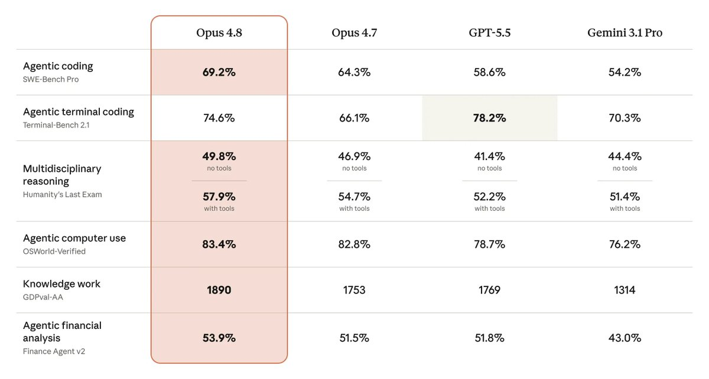
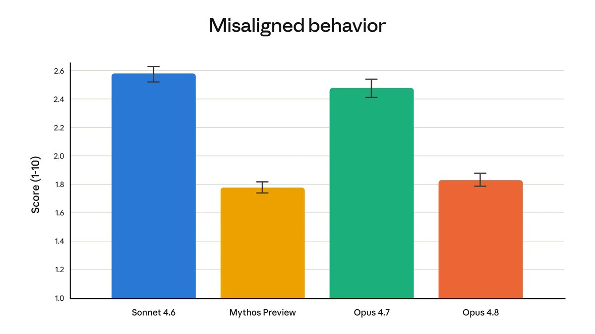

Anthropic发布Claude Opus 4.8模型！
常规模式的定价与Opus 4.7相同：每百万个输入令牌 5 美元，每百万个输出令牌 25 美元
快速模式的定价为每百万个输入令牌10美元，每百万个输出令牌50美元，模型运行速度提升 2.5 倍）的价格也比之前的版本降低了三倍
Opus 4.8默认设置为high effort，消耗的token数与Opus 4.7的默认级别相近，但性能更佳。此外还可以选择“extra” (Claude Code中的“xhigh”) 或max
目前已有少数机构正在使用 Claude Mythos Preview 进行网络安全工作，A\正在快速推进这些防护措施的开发，并预计在未来几周内将 Mythos 级模型推广给所有客户
常规模式的定价与Opus 4.7相同：每百万个输入令牌 5 美元，每百万个输出令牌 25 美元
快速模式的定价为每百万个输入令牌10美元，每百万个输出令牌50美元，模型运行速度提升 2.5 倍）的价格也比之前的版本降低了三倍
Opus 4.8默认设置为high effort，消耗的token数与Opus 4.7的默认级别相近，但性能更佳。此外还可以选择“extra” (Claude Code中的“xhigh”) 或max
目前已有少数机构正在使用 Claude Mythos Preview 进行网络安全工作，A\正在快速推进这些防护措施的开发，并预计在未来几周内将 Mythos 级模型推广给所有客户

